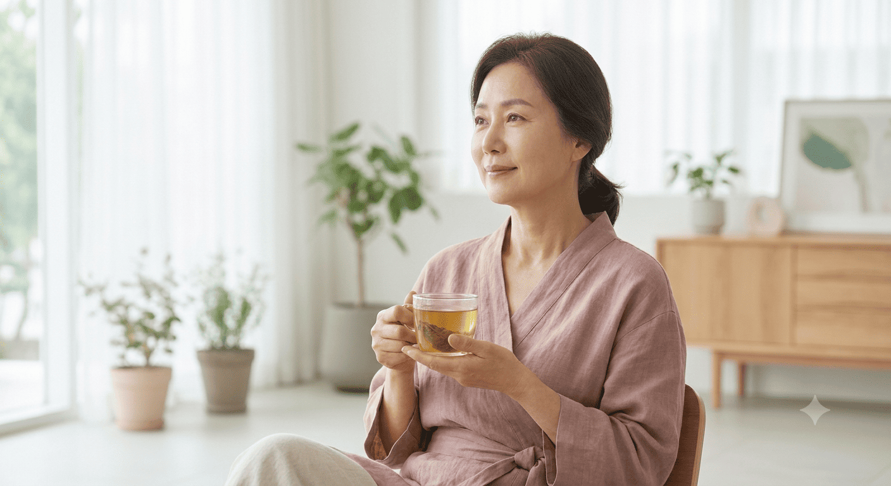

여성의 생애주기와 체질, 현재의 건강 상태를 세심하게 살펴
각 시기에 필요한 건강 관리와 회복을 돕습니다.

여성은 생리, 임신과 출산, 갱년기 등 다양한 생애주기를 거치면서 신체와 호르몬의 변화를 경험하게 됩니다.
하남풍산경희한의원은 여성 개개인의 체질과 현재의 건강 상태를 세심하게 살펴보고, 갱년기 증상과 여성 질환, 출산 후 회복 등 각자의 상황에 맞는 맞춤 치료를 진행합니다.
안면홍조, 불면, 피로감 등 갱년기에 나타날 수 있는 다양한 증상을 살펴 몸의 균형을 회복할 수 있도록 돕습니다.
출산 후 떨어진 체력과 신체 기능의 회복을 살펴 산후 건강을 안정적으로 관리할 수 있도록 돕습니다.
생리통과 생리불순 등 여성에게 나타날 수 있는 다양한 증상을 체질과 건강 상태에 맞춰 관리합니다.
반복되는 스트레스와 피로로 지친 몸과 마음을 살펴 편안한 일상과 건강한 컨디션 회복을 돕습니다.